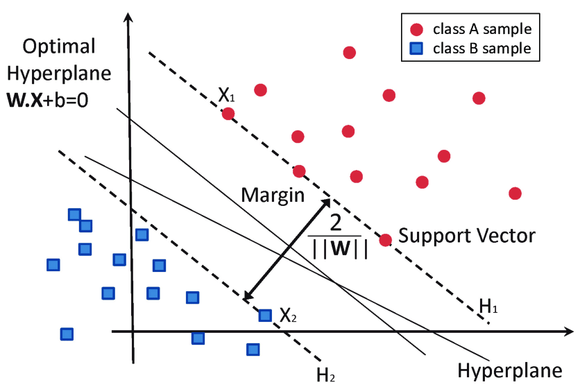

支持向量机——硬间隔SVM
支持向量机（Support Vector Machine, SVM）是一种二分类模型，其基本思想为使两类的间隔（Margin）最大化。引入核技巧后可成为非线性分类器。SVM可看作一个求解凸二次规划的问题，也可以看作一个正则化的合页损失（Hinge Loss）最小化问题。
俗话说得好，SVM有三宝：间隔、对偶、核技巧，本文我们将介绍前两宝。
第一宝：间隔
我们依然将超平面定义为 \[w^Tx+b=0\] 模型为 \[f(w)=sign(w^Tx+b)\] 其中 \[sign(x)=\left\{\begin{aligned}1\quad x>0 \\-1\quad x < 0 \end{aligned}\right. \] 我们提到，我们的目标是让两类间隔最大，那么两类的间隔如何表示呢？我们在这里引入几何间隔（Geometric Margin）。对于给定的数据集\(D\)和超平面\(w^Tx+b=0\)，超平面关于样本点\((x_i,y_i)\)的几何间隔为（\(i\)的取值如不指明便为\(i=1,2\cdots N\)，之后不再一一写出） \[\gamma_i=\frac{y_i|w^Tx_i+b|}{||w||}\] 那么超平面关于所有样本点的几何间隔的最小值为 \[\gamma_{min}=\underset{x_i} {min}\frac{y_i|w^Tx_i+b|}{||w||}\] 于是，SVM模型的求解最大分割超平面问题可以表示为以下约束优化问题 \[\left \{ \begin{aligned}&\underset{w,b}{max}\underset{x_i}{min}\frac{y_i|w^Tx_i+b|}{||w||}\\&s.t.\quad \frac{y_i(w^Tx_i+b)}{||w||}\ge\gamma_{min}\end{aligned}\right .\tag{1}\] 不难发现因为有约束条件，可以去掉式中的绝对值符号；同时约束条件可以在两边同时除以\(\gamma_{min}\) \[\left \{ \begin{aligned}&\underset{w,b}{max}\underset{x_i}{min}\frac{y_i(w^Tx_i+b)}{||w||}\\&s.t.\quad \frac{y_i(w^Tx_i+b)}{||w||\gamma_{min}}\ge1\end{aligned}\right .\] 为了表达简洁，我们令 \[\begin{aligned}w&=\frac{w}{||w||\gamma_{min}}\\b&=\frac{b}{||w||\gamma_{min}}\end{aligned}\] 也即令\(\gamma_{min}=1\)，同时我们提出\(\frac{1}{||w||}\)，于是有 \[\left \{ \begin{aligned}&\underset{w,b}{max}\frac{1}{||w||}\underset{x_i}{min}y_i(w^Tx_i+b)\\&s.t.\quad \frac{y_i(w^Tx_i+b)}{||w||\gamma_{min}}\ge1\end{aligned}\right .\] 其中\(\underset{x_i}{min}y_i(w^Tx_i+b)=\gamma_{min}=1\)。那么得到 \[\left \{ \begin{aligned}&\underset{w,b}{max}\frac{1}{||w||}\\&s.t.\quad \frac{y_i(w^Tx_i+b)}{||w||\gamma_{min}}\ge1\end{aligned}\right .\] 我们注意到，最大化\(\frac{1}{||w||}\)即为最小化\(\frac 1 2 w^Tw\)，那么问题可转化为 \[\left \{ \begin{aligned}&\underset{w,b}{min}\frac 1 2 w^Tw\\&s.t.\quad \frac{y_i(w^Tx_i+b)}{||w||\gamma_{min}}\ge1\end{aligned}\right .\] 约束条件中分母有\(||w||\gamma_{min}\ge0\)，所以可以得到 \[\left \{ \begin{aligned}&\underset{w,b}{min}\frac 1 2 w^Tw\\&s.t.\quad y_i(w^Tx_i+b)\ge1\end{aligned}\right .\tag{2}\] 于是我们发现，这个问题被转化为一个凸优化（Convex Optimization）问题。如果这个问题不那么复杂，我们可以用很多现成的工具求解；如果不然，我们将引入其他方法，例如对偶问题（Dual Problem）和核技巧（Kernal Trick）。其中核技巧我们将在下一章才会介绍。
第二宝：对偶
既然这是一个带约束的优化问题，自然想到拉格朗日乘数法。
构造拉格朗日目标函数得到
\[\underset{w,b}{min}\underset{\lambda}{max}L(w,b,\lambda)=\frac 1 2w^Tw+\sum_{i=1}^{N}\lambda_i(1-y_i(w^Tx_i+b))\tag{3}\]
我们令
\[\theta(w)=\underset{\lambda}{max}L(w,b,\lambda)\]
可以看出
SMO算法是一种启发式算法，其基本思想为：如果所有变量的解都满足此最优化问题的KKT条件，那么我们就找到了最优化问题的解。如果想要深入了解，最好的资料为《Sequential Minimal Optimization A Fast Algorithm for Training Support Vector Machines》（John C. Platt）。
SMO算法每次对一个参数进行优化，然而在本问题中，由于有 \[\lambda_iy_i=-\sum_{j=1}^{i-1}\lambda_jy_j-\sum_{j=i+1}^N\lambda_jy_j\] 若我们每次只选择一个\(\lambda_i\)，\(\lambda_i\)就不再是变量了，因此我们每次选取两个，从\(\lambda_1\)和\(\lambda_2\)开始。此时有 \[\lambda_1y_1+\lambda_2y_2=-\sum_{i=3}^N\lambda_iy_i\] 方便起见，我们令\(\zeta=-\sum_{i=3}^N\lambda_iy_i\)。有 \[\lambda_1y_1+\lambda_2y_2=\zeta\] 当\(y_1\)和\(y_2\)异号，即一个为\(1\)，另一个为\(-1\)，他们可以表示为一条直线，如下图

其上限\(H\)与下限\(L\)分别为 \[\begin{aligned}H&=min(C,C+\zeta)\\L&=max(0,\lambda_2-\lambda_1)\end{aligned}\] 同理，当\(y_1\)与\(y_2\)同号， \[\begin{aligned}H&=min(C,\lambda_2+\lambda_1)\\L&=max(0,\lambda_2+\lambda_1-C)\end{aligned}\] 我们将\(\lambda_1\)用\(\lambda_2\)表示， \[\lambda_1=(\zeta-\lambda_2y_2)y_1\] 将其代入\((7)\)式中，得到 \[L(\lambda)=A\lambda_2^2+B\lambda_2+C\] 其中\(A\)、\(B\)、\(C\)均为固定值。对\(L(\lambda)\)求导，我们用\(\lambda_2^{new,unclipped}\)表示求导得到的\(\lambda_2\)。用下式对结果进行修剪 \[\begin{aligned}\lambda_2^{new}=\left\{\begin{aligned}&H& \lambda_2^{new,unclipped}>H\\&\lambda_2^{new,unclipped}& L\le\lambda_2^{new,unclipped}\le H\\&L& \lambda_2^{new,unclipped}< L\end{aligned}\right.\end{aligned}\] 这样我们可以得到一组\(\lambda_2^{new}\)和\(\lambda_1^{new}\)。继续选取下一组参数，最终即可求得\(\lambda^*\)。 由反证法易得，\(\lambda^*\)中，\(\exist \lambda_j^*>0\)，那么有 \[y_j({w^T}^*x+b^*)-1=0\] 根据\((6)\)式，我们可以求得 \[\begin{aligned}&w^*=\sum_{i=1}^N\lambda_i^*y_ix_i\\&b^*=y_j-\sum_{i=1}^N\lambda_i^*y_i(x_ix_j)\end{aligned}\] 于是不难发现支持向量机的一个重要性质：训练完成后，大部分的训练样本都不需要保留，最终模型仅与支持向量有关。